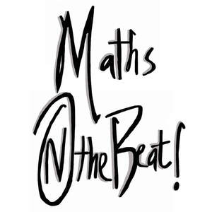

Trade Mark Journal No.2025/051 19 December 2025
UK00004306199 5 December 2025 (35,41)

- Class 35
- Career placement; Career planning consultancy; Career networking services; Career placement consulting services; Career advisory services (other than education and training advice); Information services relating to jobs and career opportunities; Career information and advisory services (other than educational and training advice).
- Class 41
- Providing tutorial sessions in the field of mathematics; Teaching; Academic mentoring of school age children; Education, teaching and training; Education; Education and training; Academies [education]; Education and instruction; Services of schools [education]; Education services; Academy education services; Education academy services; Academy services (Education -); Vocational education and training services; Training and education services; Education and training services; Education and instruction services; Provision of education courses; Educational services for providing courses of education; Career counseling [education]; Higher education services; Provision of training and education; Provision of education and training; Providing of education; Education information; Information (Education -); Adult education services; Education and training consultancy; Secondary school educational services; Educational and teaching services; Career counselling [training and education advice]; Tutoring; Providing tutoring in the field of geometry; Providing of training, teaching and tuition; Teaching services; Teacher training services; Services for arranging teaching programmes; Teaching academy services; Educational services for providing courses of instruction; Arranging for students to participate in educational courses; Arranging of courses of instruction; Arranging of classes; Providing online courses of instruction; Arranging teaching programmes; Arranging of training courses; Arranging and conducting of training courses; Providing courses of instruction; Arrangement of training courses in teaching institutes; Conducting instructional courses; Instructional and training services; Providing online training seminars; Providing courses of training; School services; Conducting of educational courses; Conducting of educational courses in science; Courses for the development of consulting skills; Workshops (Arranging and conducting of -) [training]; Arranging and conducting of workshops [training]; Arranging and conducting of training workshops; Providing courses of instruction at high school level; Online education services; Tuition; Career counselling relating to education and training; Career advisory services (education or training advice); Provision of online tutorials; Conducting of classes; Research in the field of education; Provision of facilities for tuition; Career and vocational training; Career counselling and coaching; Career and vocational counselling; Education services relating to vocational training; Courses (Training -) relating to science; Education services relating to computer software; Organising of educational games; Educational and training services relating to games; Providing games; Providing online video games; Interactive computer game services; Providing online games; Educational services; Provision of online computer games; Educational instruction.
Nneoma Olive Egele